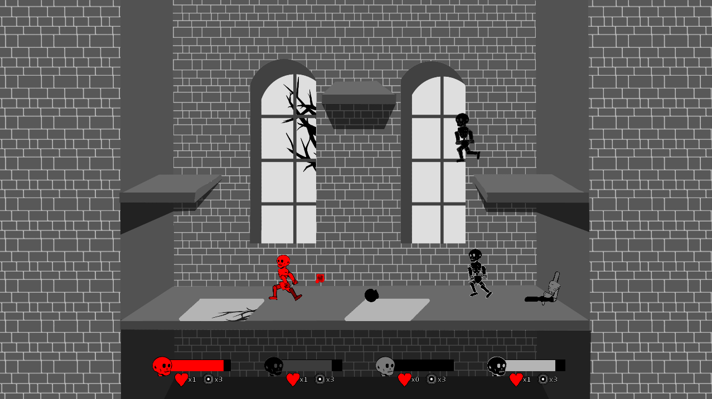
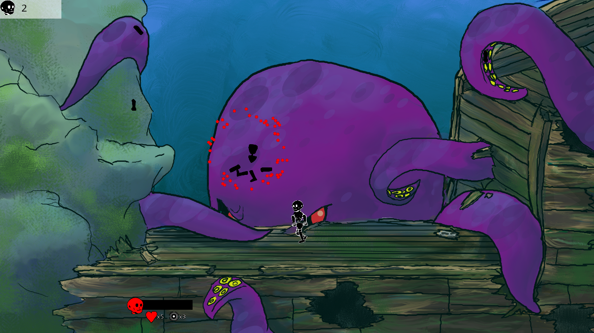
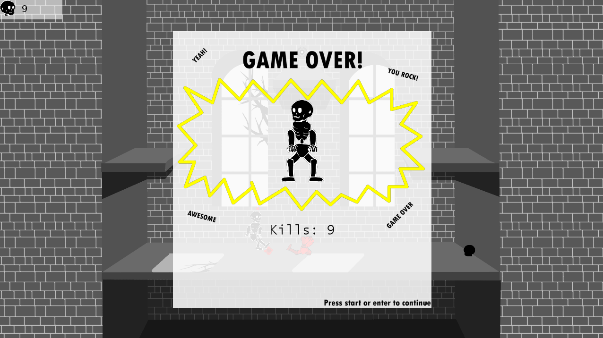

Broken Bones |
|
|
Design, programming, and music by Tad Cordle Art by Cosette Delisle and Erin Williams Additional programming by Michael Davis and Yadikaer Yasheng Credits to Alan Kahn and Cory Lemons for ideas You can view the source here and download a playable executable here. Broken Bones is a physics-based fighting game where every limb is its own object with its own health and strength attribute. Attack an opponent's limb, and it will become weaker and weaker; for example, attack an opponent's arm to make it move slower, making it harder for the opponent to punch, or attack their legs to make walking more difficult.  The game actually has no traditional animations; every bit of movement in the game is driven by the physics engine. This means every walk, jump, and attack cycle was done through code, applying forces and adjusting the target angles of the joints over time.  The game features 4-player local multiplayer, with free-for all, 2v2, and 1v3 game modes. It also includes AI players that you can fight in the co-op survival mode, or in case you don't have a full party.  Broken Bones was programmed in C# using the XNA framework and uses the Farseer Physics engine. |